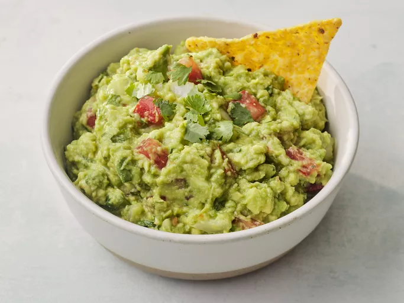

Craving restaurant-worthy guacamole?
All it takes is a handful of ingredients.
This foolproof, fan-favorite recipe is so easy to throw together, you’ll be making it on repeat.
Prep Time: 15 mins - Total Time: 15 mins - Servings: 4
Scoop it up with tortilla chips, crackers, or crisp veggies, spread it on toast, spoon it over burgers and sandwiches, or top a baked potato with a generous dollop.
Avocados brown quickly when exposed to air, so guacamole can lose its bright color. Store guacamole in an airtight container and cover the surface with a thin layer of water, lemon juice, or lime juice to prevent browning. Seal and refrigerate for up to two days.
Yes, you can freeze guacamole. Ladle it (in serving-size portions) into freezer bags, squeeze out the excess air, and flatten. Wrap the bags in foil for extra protection against freezer burn. Freeze for up to three months. Thaw in the refrigerator.